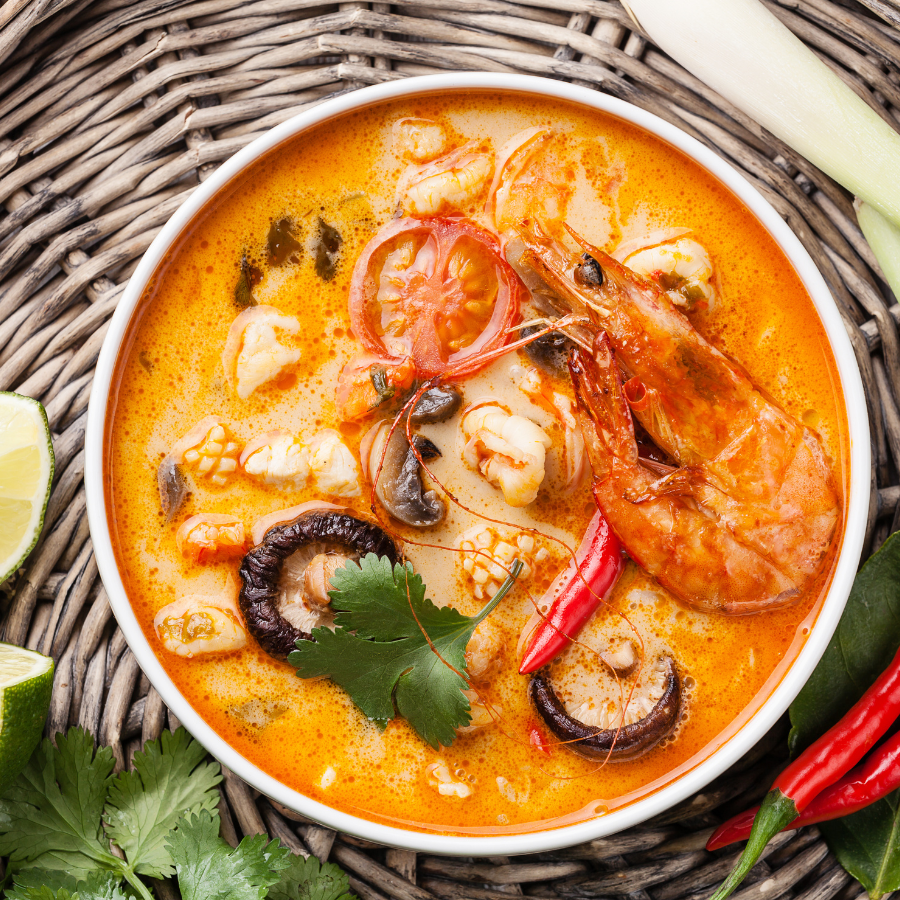

เลือกดูตามหมวด
ยังไม่มีเมนูโปรด กดปุ่ม "+ เมนูโปรด" ที่เมนูเพื่อเก็บไว้

Thai food guide
รวมเมนูไทยที่ต้องลอง ตั้งแต่ผัดไทยไปจนถึงข้าวเหนียวมะม่วง เลือกดูตามหมวด สุ่มเมนูที่จะกิน และเก็บเมนูโปรดไว้ดูภายหลัง
เลือกดูตามหมวด
ยังไม่มีเมนูโปรด กดปุ่ม "+ เมนูโปรด" ที่เมนูเพื่อเก็บไว้